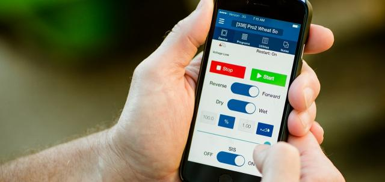
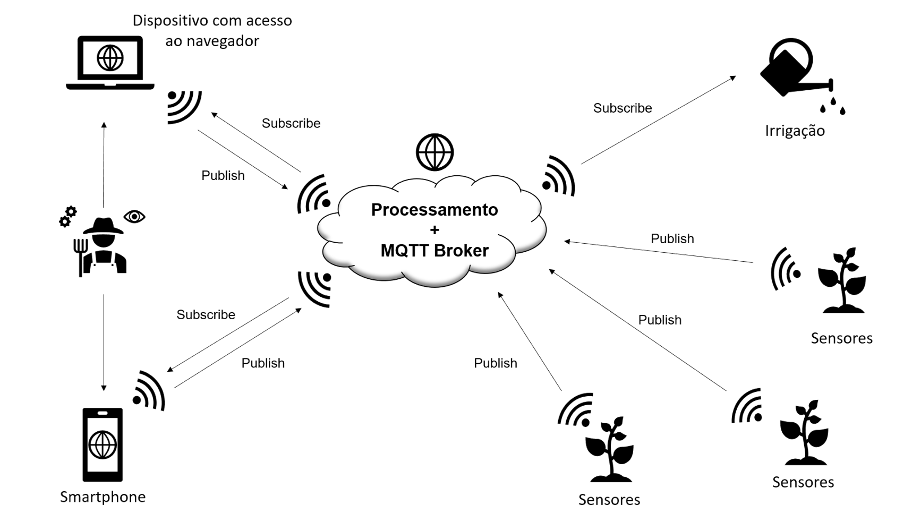
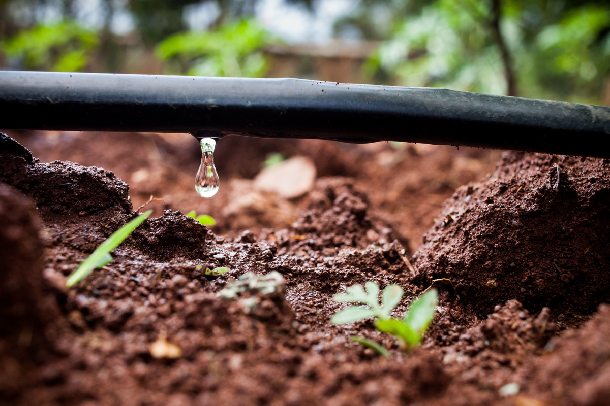

Iniciação Científica durante o curso Técnico
Alunos da Etec Campinas criam tecnologia para economia de água
Melhorar a produtividade agrícola e ao mesmo tempo reduzir o consumo de água na agricultura. Essa ideia surgiu do espírito criativo dos estudantes da Escola Técnica Estadual (Etec) Bento Quirino, de Campinas, que desenvolveram a tecnologia Water Wireless Sustain. O projeto faz parte do Trabalho de Conclusão de Curso (TCC) de Luiz Fernando Kikuchi e Heitor Akihiro Toyonaga, que cursam o terceiro ano do curso técnico de Eletrônica integrado ao Ensino Médio. Orientado pelos professores Marcelus Guirardello e Regina Kawakami, o TCC está na fase final de produção.
Pelo controle do volume de água, a proposta tecnológica visa racionalizar o processo de irrigação das culturas, que se dá por meio da instalação de um sensor no subsolo, capaz de calcular os índices de umidade. A partir desse cálculo, é possível aferir o volume preciso e necessário para irrigar o cultivo.
O dado sobre umidade captado pelo sensor é transmitido para um computador, em tempo real, que decide a necessidade de irrigar ou não a plantação. Esta decisão é tomada a partir de parâmetros definidos pelo agricultor como, por exemplo, a umidade que ele pretende manter na plantação e em qual período do dia deverá ser feita a irrigação. O produtor poderá executar os comandos de um smartphone conectado à internet. Nessa primeira fase do projeto, a tecnologia funciona exclusivamente no sistema Android, mas poderá ser estendida também para o iOS posteriormente.
Classificado para a segunda fase do Prêmio Eseg de Gestão, o projeto com o protótipo da Water Wireless Sustain participará das feiras de Ciência e Tecnologia Bentotec (dias 12 e 13), em Campinas, e Bragantec (19 a 21), em Bragança Paulista. O projeto também competiu no 17º Bench Day, realizado em junho na Capital, conquistando o quarto lugar.
Consumo consciente
A nova ferramenta está sendo desenvolvida dentro do conceito de Internet of Things (IoT), que prevê soluções de comunicação por meio da conexão entre o ambiente, o produtor e as máquinas, por meio da internet. A adoção da Water Wireless Sustain permitirá que o usuário monitore as culturas e execute os comandos necessários, a partir de qualquer lugar que tenha cobertura de internet.
Para Guirardello, a tecnologia Water Wireless Sustain deve proporcionar uma redução aproximada de 35% no consumo de água, comparando com a irrigação tradicional. “Essa tecnologia permite mais economia e eficiência e pode substituir a irrigação por aspersão que joga um volume indiscriminado de água”, explica.
Os orientadores do projeto ressaltam que os alunos da Etec Bento Quirino pesquisaram sobre o tema economia de água para o TCC por serem sensíveis ao impacto ambiental causado pelo desperdício na irrigação. De acordo com o levantamento da Agência Nacional de Águas (ANA), a taxa de desperdício de água na atividade agrícola é de 50%. As perdas são provocadas principalmente pelas práticas de irrigação mal executadas e pelo descontrole do produtor no uso da água no processamento de produtos.
O alto índice de perda contribui para que a agricultura seja a atividade econômica que mais consome água. Segundo dados da ANA e do Fundo das Nações Unidas para Agricultura e Alimentação (FAO), 70% da água tratada vai para o abastecimento das produções agrícola e pecuária.
Fonte: https://www.cps.sp.gov.br/alunos-da-etec-campinas-criam-tecnologia-para-economia-de-agua/
Voltar